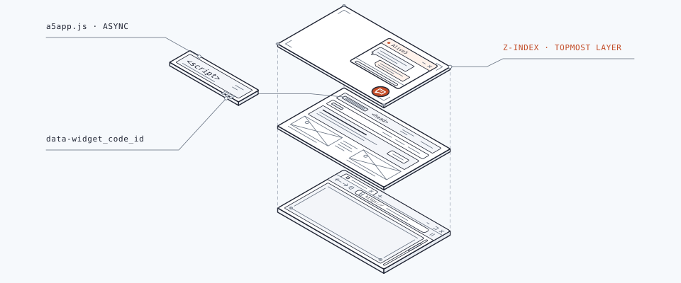

Home/Integrations/Chat widget
Install the chat widget
Add the Alive5 chat widget to your website.

Copy your widget code
In your dashboard, open Widgets → View → The Code. Copy the code for your widget and place it in your page's HTML where the widget should appear.
Replace YOUR_WIDGET_ID with the widget ID from your code.
<script type="text/javascript">
(function(d, s, id) {
var js, fjs = d.getElementsByTagName(s)[0];
if (d.getElementById(id)) { return; }
js = d.createElement(s);
js.id = id;
js.async = true;
js.src = "https://alive5.com/js/a5app.js";
js.setAttribute("data-widget_code_id", "YOUR_WIDGET_ID");
fjs.parentNode.insertBefore(js, fjs);
}(document, "script", "a5widget"));
</script>
Use the external loader
For a strict Content security policy (CSP), use the external loader with your widget ID.
<script src="https://alive5.com/js/a5app-loader.js" async defer data-widget_code_id="YOUR_WIDGET_ID"></script>
Content security policy
Use the external-loader header, or the nonce variant for the inline loader; each is a single HTTP header.
Content-Security-Policy: script-src 'self' https://alive5.com; style-src 'self' 'unsafe-inline'; img-src 'self';
Content-Security-Policy: script-src 'self' 'nonce-RANDOM_NONCE_GENERATED' https://alive5.com; style-src 'self' 'unsafe-inline'; img-src 'self';
For the nonce variant, generate a fresh nonce in each request handler and pass it to the template:
const crypto = require('crypto');
// Inside your request handler:
const nonce = crypto.randomBytes(16).toString('base64');
reply.header('Content-Security-Policy',
`script-src 'self' 'nonce-${nonce}' https://alive5.com; style-src 'self' 'unsafe-inline'; img-src 'self';`);
reply.locals.nonce = nonce;
Use the same nonce in the inline script’s opening tag and load Alive5 scripts over HTTPS:
<script type="text/javascript" nonce="{{nonce}}">
Widget settings
Open your widget's Settings to configure these fields.
| Setting | Use |
|---|---|
| Google Tracker Id | Set the Google Tracker Id for this widget. |
| Z-index | Control the widget's stacking order. It is very high by default. |
| Start chats in this channel | Choose the channel where widget chats start. |
Drupal
Use the Alive5 module for Drupal 10 ↗ to embed the widget with page, role, and content-type display rules. You need an Alive5 live-chat/AI account and a Widget ID.
- Find your Widget ID
In Alive5, open Widgets → View → The Code. Copy the value of
data-widget_code_id. - Open the module configuration
In Drupal, go to Configuration → System → Alive5.
- Enter the ID
Paste the value into Widget ID.
To prefill visitor details, see Pass visitor data.